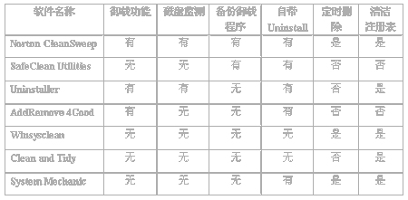

|
|
| 当前位置：电脑报电子版 > 1999 年 > 39 期 > 评测与市场 > 共享软件系列评测报告之磁盘清洁工具 |
| 《 共享软件系列评测报告之磁盘清洁工具 》 |
| 软件评测从1998年开始陆续推出了比较有影响的评测报告，并且得到了读者朋友的支持和信任。共享软件作为软件行业的一种新兴模式，是互联网的产物，随着互联网的普及以及第三代程序员的崛起而发展，它获取快捷、小巧实用，从一开始就受到用户的青睐。从本期开始，我们将陆续推出10大系列共享软件评测。明年扩版后，本报将专门开设两个版的软件评测报告，对最新的商业软件和共享软件进行客观的评测，因为“公平、公正、客观" 是我们一贯的宗旨。 由于Windows 9x操作系统对于整个系统的管理主要通过注册表的方式进行，在安装一个软件时，往往会在注册表中写入相应信息，并且会复制一些系统调用文件到Windows目录，所以在卸载这些软件时必须在删除安装目录外，还必须删除注册表的相应信息和Windows目录中的文件。 所以，本次电脑报评测室专门针对磁盘清洁工具推出的评测报告，为读者正确选择适合自己的磁盘清洁工具提供参考。 本次评测所使用的系统环境： 1．硬件环境： CPU（PⅢ450）、内存（128MB）、硬盘（昆腾九代10GB）、显卡（TNT2 16M显存）。 2．软件环境： 简体中文Windows 98、Internet Explorer 5.0。 选 择 为了对磁盘清洁工具软件进行较全面的测试，我们特地在网上展开大搜索，尽量找出具有代表性并且实用的工具软件。最终在网上共获得20多个磁盘清洁工具共享软件，为了从其中选择出具有代表性的工具软件，我们按照以下五个标准进行选择：1． 具有磁盘监视功能 2． 具有程序卸载功能 3． 具有备份及还原功能 4． 清除垃圾文件功能（临时文件、IE Cookies、IE History、备份文件等等） 5． 操作方便、容易上手 经过我们软件评测小组成员的努力，按照以上标准对这20多个工具软件逐一进行测试，发现这些磁盘清洁工具都有各有特色，并且都有比较强大的清洁功能。最后，我们确定了以下七个具有代表性的磁盘清洁工具：Norton CleanSweep 4.51；SafeClean Utilities 2.0；System Mechanic 3.0b；Uninstaller 5.11；AddRemove 4Good 2.0；Winsysclean 1.0； Clean and Tidy 1.4。它们都属于共享软件，可以从网上下载，并且都有一定的试用期限。 安 装 本次选择的七个磁盘清洁工具软件都支持 Windows9x和Windows NT 操作系统。安装文件的大小除 Norton CleanSweep 4.51(12080KB)和Uninstaller 5.11(8369KB)较大之外，其余六个资源管理器都在1MB～2MB左右，甚至AddRemove 4Good 2.0只有355KB。这些磁盘清洁工具软件都需要进行安装才能执行，其中，Norton CleanSweep、SafeClean Utilities、Uninstaller和Winsysclean必须经过解压缩后才能进行安装，AddRemove 4Good 、Clean and Tidy和System Mechanic属于自解压安装。Norton CleanSweep在安装完后将对当前磁盘的所有文件进行分析并作记录。操作性 在我们每次的评测中都强调了软件的可操作性，毕竟它是初学者能否快速熟悉和掌握该软件的关键所在。本次参与评测的七个磁盘清洁工具软件都具有Windows风格的界面和操作特性，并且各有特色。Norton CleanSweep采用页式管理，操作方便（如图1 ）。System Mechanic在界面的外形上有独特的效果，好像一个工具箱， Norton CleanSweep和Uninstaller安装后将注册到Windows的动态库中，并在每个文件及其快捷的右键菜单上出现这个磁盘清洁工具的常用的操作功能命令让用户对所选取的文件及其目录进行卸载，方便直观。 SafeClean Utilities与其它六个磁盘清洁工具软件最大的不同就是，其界面是全中文的，并且所有界面非常简洁。另外，还有一个与众不同的工具即Winsysclean，它把所有功能集合在一个主界面上，界面上的内容看来比较多，其实它操作起来非常简单，只需按动鼠标选取按钮即可实现功能的调用。 Uninstaller不论是在安装过程，还是在使用中，几乎都是按照步骤进行，让用户进行选择或了解整个执行过程。 因此，我们认为： Norton CleanSweep在可操作性上表现非常好，它的各个功能操作明确，用户上手快速，并且采用操作向导实现它的功能；其次当属SafeClean Utilities，它界面简洁，操作简单，全中文界面。 系统资源占用 系统中的资源占用是评价一个软件的重要指标。为了获得各个磁盘清洁工具软件在系统资源中占用的情况，我们分别进行了用户资源、GDI资源、CPU占用、CPU最高占用和内存占用等资源测试。Norton CleanSweep的主程序使用Cs32.exe程序，而其硬盘监视器和安装监视器分别使用Csusem32.exe和Csinsm32.exe，这样在操作系统启动时就载入硬盘监视器和安装监视器，而不须启动主程序，除非需要载入。并且硬盘监视器占用5.6MB的内存空间，安装监视器占用5.8MB内存空间，而主程序却占用了8.9MB的内存空间。 从所选的七个清洁工具的资源占用对比表（表1）看出：它们之间的内存占用差别不是太大，具有备份卸载程序的Norton CleanSweep、Uninstaller 和System Mechanic 占用内存比较多，分别为：8940KB、8668KB和6640KB。对于CPU最高占用率差别也比较大，SafeClean Utilities和Winsysclean占用不到50％，而System Mechanic高达98.15％，其次就是AddRemove 4Good、Clean and Tidy、Norton CleanSweep和Uninstaller分别为97％、96.65％、95.2％和93.7％。 在系统资源占用方面，只有System Mechanic占用比较大，系统资源占用17％，GDI资源占用达20％，用户资源比较小，只有2％，而其余六个磁盘清洁工具在这三个资源占用上相对System Mechanic都比较少。 Windows98操作系统有3种主要组件：Kernel、User和GDI，Windows98将这些组件作为DLL实现，DLL是由可许程序同时使用的模块化库，所以我们称其为动态链接库，它们分别对应：KERNEL32.DLL、USER32.DLL和GDI32.DLL，这样就保证了速度、模块化和一致性，其中：KERNEL32.DLL处理诸如文件I/O（input/output，输入和输出），程序加载和执行，以及内存管理的功能；USER32.DLL处理用户输入和输出（如：键盘、鼠标、声音以及通信），并提供Windows界面本身，包括图标和标准对话框等；GDI32.DLL管理操作系统中所有的图形和打印。由此可知，System Mechanic的GDI资源占用达20％，主要是因为它为了保证界面的纯英文，而又使用了大量的图片所致（如图2），主界面上的每个按钮都使用图形来区别，而不是像其它工具那样使用文字，所以GDI资源占用比较高。 在测试中，我们发现：这些磁盘清洁工具为了降低资源占用、提高效率，几乎都将一些常用和不常用的功能分别使用不同的应用程序，而非捆绑在一个应用程序中。因此，我们认为，作为一个应用程序，首先必须实现用户所需功能，其次需要降低其各种资源占用，才能提高应用程序的运行速度、保证其稳定性。 卸载功能 当初，在16位的DOS时代，一个应用程序就是一个目录，如果不需要此应用程序时，只要删除该目录即可，所以不存在程序卸载。现在，进入32位操作系统的Windows 98后，删除应用程序不再是只是删除单个目录那样简单，因为Windows98对系统的管理通过注册表来进行，在安装应用程序时，不仅需要复制到目录中，而且还要将一些DLL、INI等文件复制到Windows目录中，并且在注册表中写入相应的信息。因此，卸载应用程序时，不再是简单地删除安装目录，而应当删除它在安装时写入Windows目录中的文件以及注册表中的信息。如果在安装该应用程序时进行监视，将过程一举一动都记录下来，那么在卸载该应用程序时就可以照单删除，决不遗漏。在七个磁盘清洁工具软件中，只有Norton CleanSweep具有安装监视功能，Norton CleanSweep专门有一个安装监视器和硬盘监视器，在进入Windows系统时开始启动，在系统栏中共出现三个图标，监视应用程序的安装以及硬盘的活动，一旦有应用程序开始安装，它马上就会捕获到，并以日志方式记录安装信息。Uninstaller也有安装记录功能，只是必须在Uninstaller中调用应用程序才能进行正确记录。 对不需要的应用程序进行卸载，是清除垃圾文件中最重要的一个环节。具有卸载功能的有：Norton CleanSweep、Uninstaller和AddRemove。Norton CleanSweep通过选择应用程序在“程序"中的快捷目录即可进行卸载，在进行卸载前，程序会对选中的应用程序进行分析，找到其它安装目录、在Windows中安装文件以及注册表的各种信息，然后将需要卸载的应用程序的各种文件及信息一一记录，并将它们备份到一个专门的目录（可以由用户自行设置），以备用户后悔还得及恢复，因为Norton CleanSweep还具有恢复卸载功能。Uninstaller在卸载功能上具有与Norton CleanSweep相似的操作（如图3），以及备份和恢复功能。 为了对这三个具有卸载功能的磁盘清洁工具进行测试，专门选取了比较常用的10个应用程序参与进行卸载和恢复功能的测试。在测试中，发现Norton CleanSweep能够完全地将应用程序的各个文件及信息卸载，并在指定目录备份卸载文件及信息，将卸载内容进行恢复时，能够完全恢复，主要是因为Norton CleanSweep在卸载前的文件分析比较彻底，记录较详细。在对Uninstaller的测试中，发现其表现较Norton CleanSweep欠佳，卸载不够彻底，在进行备份时经常出现压缩错误，不能够正常备份，直接影响应用程序的恢复，并且Uninstaller真正删除文件是在Windows系统重新启动时开始，进行比较完整的清除。 AddRemove不具有备份及恢复功能，而只有与Widows的卸载功能相似的操作。AddRemove在卸载功能方面，较Norton CleanSweep和Uninstaller弱，不能通过选择文件方式进行操作，只能卸载出现在选择列表中的应用程序。在使用Windows控制面板的新增/删除程序时，当你尝试多次删除一个应用程序时，却发现无法删除，这时可以使用AddRemove帮助你除去，并保持系统的清洁。 我们认为：Norton CleanSweep在应用程序卸载方面表现非常出色，比其唯一竞争对手Uninstaller 略胜一筹，因为它不仅能够完全卸载应用程序（包括注册信息），而且其应用程序备份及恢复功能也比较强大（恢复后的应用程序能够与卸载前一样执行）。 清除垃圾文件 产生垃圾文件的原因多种多样：检查磁盘时会产生chk文件；对Word文件进行编辑时会产生tmp文件以便使之具有Undo功能；删除到回收站中的文件； IE5等浏览器具有Cache功能，利用它们上互联网浏览时会下载网页到Windows下的“\emporary Internet Files\ontent.IE5”目录中，方便下次快速打开；使用Cookies功能保存浏览过的网站地址；一些应用程序删除后留下的快捷图标等（表2），这些文件都会造成存储空间的浪费，所以，清除垃圾文件保证了用户的隐私不被窥探、有限的磁盘资源不被浪费以及保证磁盘的清洁。在清除垃圾文件的表现中，SafeClean Utilities、Clean and Tidy和System Mechanic表现很好，在上表中所列的各种垃圾文件都可清除，其次就是Norton CleanSweep，只有文件快捷不能删除。 对于删除这些垃圾文件的实现，Norton CleanSweep通过一个叫“Qdcsfs.exe"的应用程序进行，安装完成Norton CleanSweep后会在桌面上生成两个快捷图标，其中“Fast ＆ Safe Cleanup"即为该程序的快捷图标。Fast ＆ Safe Cleanup界面比较直观，以横柱图形显示当前总的磁盘剩余空间及垃圾文件所占用的磁盘空间，并在信息框中显示每个逻辑磁盘中的空间分配情况，可以选择需要删除的垃圾文件类型，另外还可以进行添加需要删除的文件类型，当然也可以减少。 SafeClean Utilities由于不具有卸载应用程序的功能，所以它在清除垃圾文件方面做得比较成功，它本身共分三个部分：环保卫士、踏雪无痕和磁盘探幽，其中：环保卫士主要删除用户自定义的文件类型，并可以通备份文件恢复以前删除的垃圾文件；踏雪无痕则是对Windows中固定的垃圾文件进行删除，如Internet Explorer Cookies、Internet Explorer History、Netscape Cookies、Netscape History 以及Windows History等共八种（如图4），保护用户的隐私；而磁盘探幽则主要是对当前所有磁盘驱动器进行分析，列出其内容以及各种信息，并可以通HTML文件保存下来。 SafeClean Utilities在清除垃圾文件方面表现非常出色，不仅操作简单，而且清除垃圾的范围比较大，可以自定义清除的文件类型。 其它功能 我们所选择的七个磁盘清洁工具软件除具有卸载应用程序、清除垃圾文件的功能外，还有一些工具软件具备有备份功能、移动功能、传输功能、编辑注册表等功能。因为一个应用程序不单是为了实现某一功能而设，还必须具有与主要功能相关的辅助功能，如备份功能、移动功能、传输功能和编辑注册表功能等（表3）。移动功能为用户节约了许多时间，如果需要将应用程序从一个安装目录移动到另外一个安装目录，或者从一个驱动器移动到另外一个驱动器，通常的做法是将此应用程序卸载，然后再重新安装，这样至少需要两重时间，而通过移动功能来实现只需单重时间，实际为我们节省了另外一重时间。移动功能不仅将安装目录移动，而且会更改各种注册信息，保证了移动后能正常启动应用程序。Norton CleanSweep 和 Uninstaller具有这些功能，而其它五个磁盘清洁工具软件不具有。我们将Norton CleanSweep和 Uninstaller的移动功能和传输功能（将安装后的应用程序从一台电脑传输到另一台电脑，使之能正常使用）对10个应用程序进行了测试，发现Norton CleanSweep表现比较好，所有的的移动和传输都正常，Uninstaller则有两个应用程序在移动后不能正常运行，三个在传输后不能正常运行。 Norton CleanSweep为了保证对注册表的清除更加彻底，特地还增加了对注册表进行编辑的功能，并可以对注册表进行备份和回存，这样就可以在手动修改注册表后出现错误时进行Undo恢复。 评测总结 通过以上对几个磁盘清洁工具的测试，我们发现：磁盘清洁工具不仅仅是卸载应用程序及清除垃圾文件，它们还具有与此相关的辅助功能（备份功能、移动功能、传输功能及存储功能），扩展了磁盘清洁的功能，并保证安全性。我们所选取的七个磁盘清洁工具各有特色，有各自的优势。结合这次评测的结果，我们特选出几款具有特定优势的磁盘清洁工具。 1．本次最佳磁盘清洁工具：Norton CleanSweep 4.51 Nortorn CleanSweep所具有的移动功能、传输功能非常出色， 它能够做到应用程序移动后与移动前一样正常运行。并且，它的安装监视功能和磁盘监视功能，可以时刻监视系统和磁盘的各个动作，一旦捕获到有应用程序开始安装或磁盘内容发生改变，它们马上就会行动，真实地记录下来，为以后对该应用程序进行卸载或清除内容提供依据资料。所以，我们将Norton CleanSweep 4.51入选为本次最佳磁盘清洁工具。 2．本次最具潜力的磁盘清洁工具：Uninstaller 5.11 Uninstaller 5.11与Nortorn CleanSweep在功能上非常相似，它有比较强大的卸载功能、移动功能、传输功能等，只是在这些方面做得还不完全成熟。所以，我们将Uninstaller 5.11列入最具潜力的磁盘清洁工具。 3．本次最佳操作的磁盘清洁工具：SafeClean Utilities 2.0 SafeClean Utilities 2.0作为一款国人自己所写的磁盘清洁工具，也是本次选取的磁盘清洁工具中唯一的国产共享软件，它以界面简洁、操作简单、清洁功能比较强而受到我们评测人员一致好评，最终成为本次的最佳操作的磁盘清洁工具。 本次所选取的磁盘清洁工具，可以通过下期的《电脑报配套光盘》获得，也可以通过下面的官方网址获得： Norton CleanSweep (http://www.norton.com/) SafeClean Utilities(http://www.ministars.com/) Uninstaller (http://download.mcafee.com/eval/evaluate.asp) AddRemove4Good (http://www.4developers.com/addremove/) Winsysclean (http://www.us.dnttm.ro/products/winsysclean/) Clean and Tidy (http://www.spinel.com/) System Mechanic (http://www.iolo.com) |
| 下载本期推荐软件 | 页 首 |
| 《电脑报》版权所有，电脑报网站编辑部设计制作发布 |